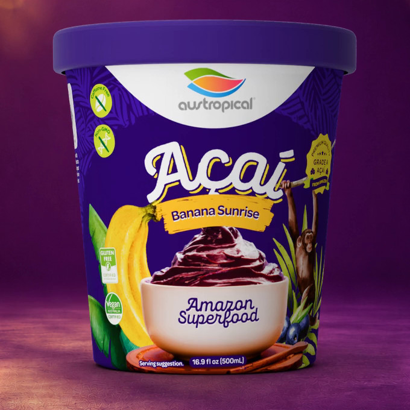
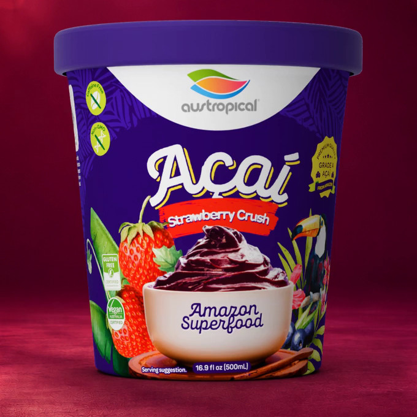
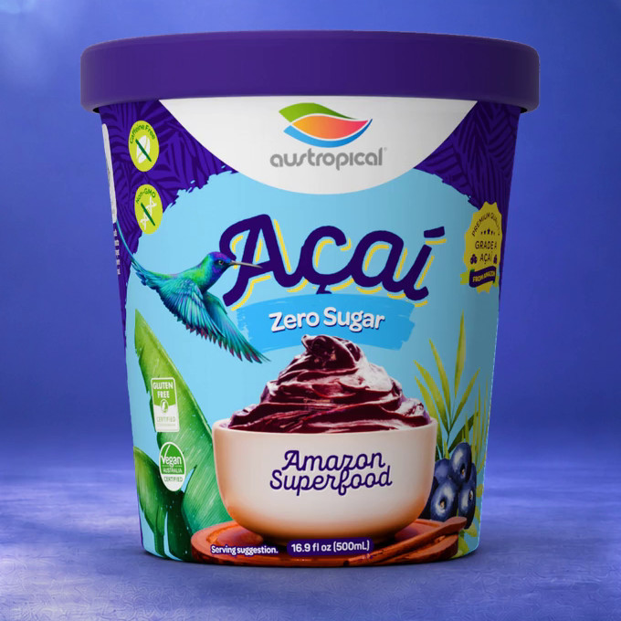
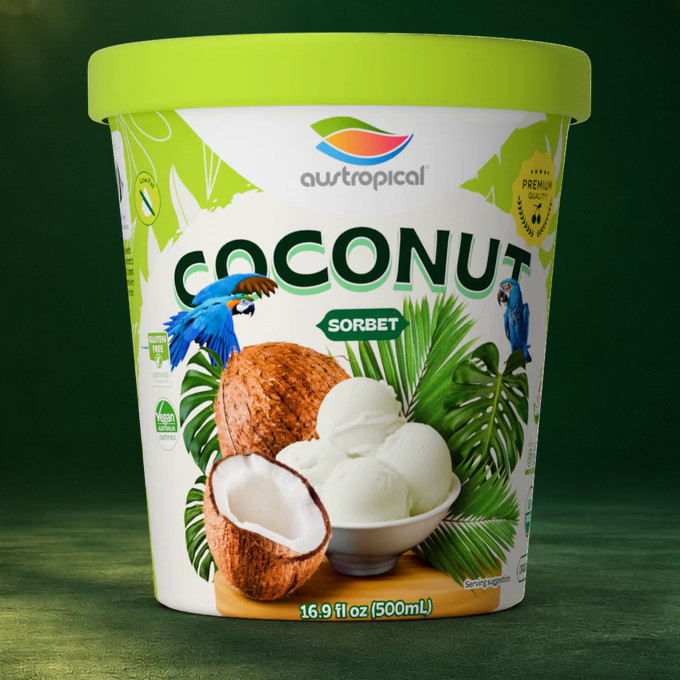
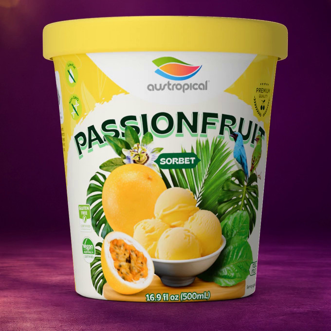
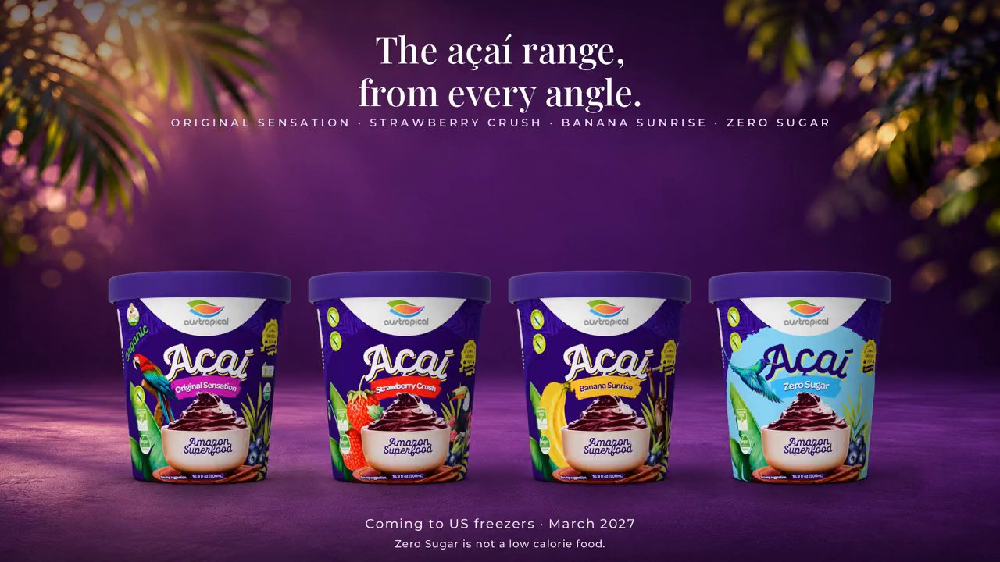
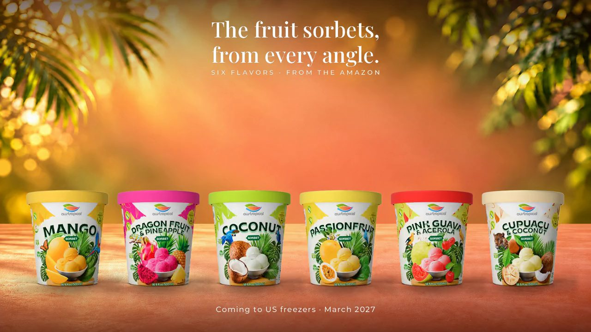

Coming to US freezers · March 2027
Açaí sorbet and tropical fruit sorbet: ten flavors
Açaí and tropical fruit sorbet made in Brazil, coming to US freezers in March 2027. Three flavors are USDA certified organic: Original Sensation, Mango and Coconut. All ten are certified vegan (Vegan Australia). Açaí Zero Sugar is not a low calorie food.
The ten flavors
-

-

-

-

-

-

-

-

-

-


From every angle
The range, turning once
Silent 12-second videos of the real packs. Tap to play.

The four açaí pints. Açaí Zero Sugar: Not a low calorie food.

The six fruit sorbet pints.

The four açaí Grab'n Go cups.
One by one
Every flavor on the ledge
Swipe through the ten pints.
Three formats
Every flavor in a pint, a Grab'n Go cup and a 10.2 kg bucket
500 mL pint
16.9 fl oz. Paper tub, foil seal, paper lid. Twelve to a case.
250 mL Grab'n Go cup
One serving, wooden spoon included. Eighteen to a case.
10.2 kg foodservice bucket
White square pail, snap lid. About 69 bowls at a 2/3 cup (147 g) scoop. The bowl program.
Questions
Açaí sorbet, answered
What is açaí sorbet?
Açaí sorbet is a frozen dessert made from açaí, the fruit of the açaí palm (Euterpe oleracea), with filtered water and a sweetener. Austropical's açaí sorbets are made in the Brazilian Amazon, with 40 to 60% açaí, pasteurized and sold frozen, ready to eat: scoop them as the base of an açaí bowl or eat them from the pint.
Is Austropical sorbet organic?
Three of the ten flavors are USDA certified organic: Original Sensation, Mango and Coconut (Austropical Pty Ltd, NOP ID 3950001101 on the USDA Organic Integrity Database). The other seven are not certified organic.
Is it vegan?
All ten flavors are certified vegan (Vegan Australia).
Is it kosher?
Nine of the ten flavors are kosher (Kosher Australia). Strawberry Crush is not.
When is Austropical in the US?
Coming to US freezers in March 2027. The first container carries Original Sensation and Mango in pints and Grab'n Go cups; the rest of the range follows. Join the waitlist with your ZIP code and we will tell you where first.